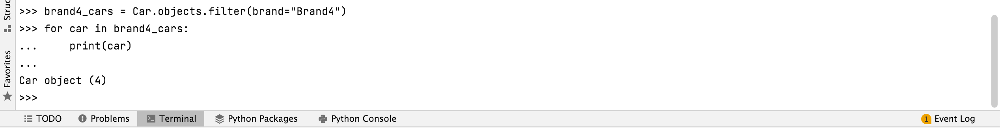
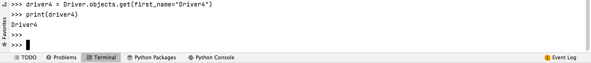
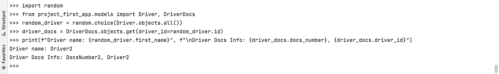
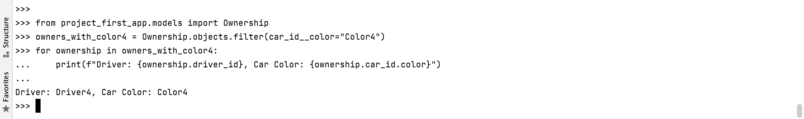

Практика 3.2
Задание 3.2.1
В первом задании второй практической работы нужно вывести все машины опредленной марки. Вот код запроса:
from project_first_app.models import Car
# Получение всех объектов Car с брендом "Brand4"
brand4_cars = Car.objects.filter(brand="Brand4")
# Вывод всех машин бренда "Brand4"
for car in brand4_cars:
print(car)
Здесь можно увидеть выполнение запроса в консоли. 
Задание 3.2.2
Во втором задании второй практической работы нужно вывести всех водителей с определенным именем. Вот код запроса:
from project_first_app.models import Driver
# Получение водителя с именем "Driver4"
driver4 = Driver.objects.get(first_name="Driver4")
# Вывод информации о водителе
print(driver4)
Здесь можно увидеть выполнение запроса в консоли. 
Задание 3.2.3
В третьем задании второй практической работы нужно, чтобы взяв любого случайного владельца, можно было получить его id, и по этому id затем получить экземпляр удостоверения в виде объекта модели. Вот код запроса:
import random
from project_first_app.models import Driver, DriverDocs
# Получение случайного водителя
random_driver = random.choice(Driver.objects.all())
# Получение нужных документов в зависимости от id выпавшего водителя
driver_docs = DriverDocs.objects.get(driver_id=random_driver.id)
# Вывод информации по водителю и его удостоверению
print(f"Driver name: {random_driver.first_name}", f"\nDriver Docs Info: {driver_docs.docs_number}, {driver_docs.driver_id}")
Здесь можно увидеть выполнение запроса в консоли. 
Задание 3.2.4
В четвертом задании второй практической работы нужно было вывести информацию о всех владельцах, чей год владения машиной начинается с определенной даты. Я написала два запроса: для сегодняшней даты и даты, которая начинается с "2022" Вот код запроса:
import random
from project_first_app.models import Ownership
# Получение всех владельцев машин цвета "Color4"
owners_with_color4 = Ownership.objects.filter(car_id__color="Color4")
# Вывод информации о владельцах
for ownership in owners_with_color4:
print(f"Driver: {ownership.driver_id}, Car Color: {ownership.car_id.color}")
Здесь можно увидеть выполнение запроса в консоли. 
Задание 3.2.5
В пятом задании второй практической работы нужно было вывести информациб о владельцах машины определенного цвета. Вот код первого запроса:
from project_first_app.models import Ownership
from django.utils import timezone
# Получение сегодняшней даты
current_date = timezone.now().date()
# Получение всех владельцев с годом владения, начинающимся с текущей даты
owners_with_current_year = Ownership.objects.filter(date_from__year=current_date.year)
# Вывод информации о владельцах
for ownership in owners_with_current_year:
print(f"Driver: {ownership.driver_id}, Car: {ownership.car_id}, Start Date: {ownership.date_from}")
А вот код первого запроса:
from project_first_app.models import Ownership
# Получение всех владельцев с годом владения, начинающимся с 2022 года
owners_with_2022_year = Ownership.objects.filter(date_from__year=2022)
# Вывод информации о владельцах
for ownership in owners_with_2022_year:
print(f"Driver: {ownership.driver_id}, Car: {ownership.car_id}, Start Date: {ownership.date_from}")
Здесь можно увидеть выполнение запроса в консоли.